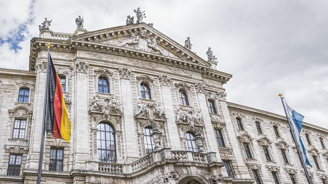

London
 London, the capital of England and the United Kingdom, is a 21st-century city with history stretching back to Roman times.At its center stands the imposing Houses of Parliament, the iconic ‘Big Ben’ clock tower and Westminster Abbey, site of British monarch coronations. Across the Thames River, the London Eye observation wheel provides panoramic views of the South Bank cultural complex, and the entire city.
London, the capital of England and the United Kingdom, is a 21st-century city with history stretching back to Roman times.At its center stands the imposing Houses of Parliament, the iconic ‘Big Ben’ clock tower and Westminster Abbey, site of British monarch coronations. Across the Thames River, the London Eye observation wheel provides panoramic views of the South Bank cultural complex, and the entire city.
Munich
Munich, Bavaria’s capital, is home to centuries-old buildings and numerous museums. The city is known for its annual Oktoberfest celebration and its beer halls, including the famed Hofbräuhaus, founded in 1589. In the Altstadt (Old Town), central Marienplatz square contains landmarks such as Neo-Gothic Neues Rathaus (town hall), with a popular glockenspiel show that chimes and reenacts stories from the 16th century.